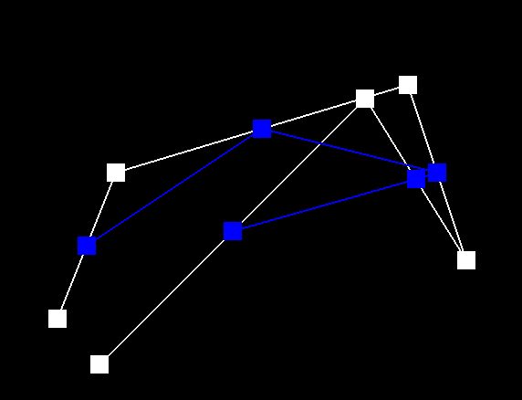
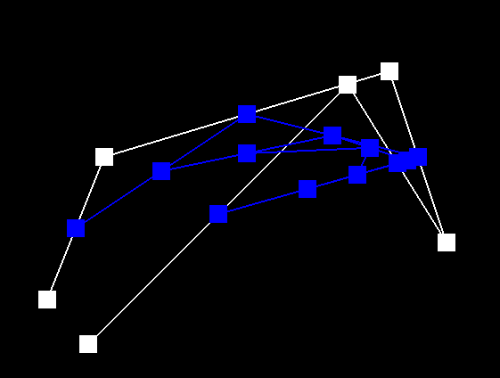
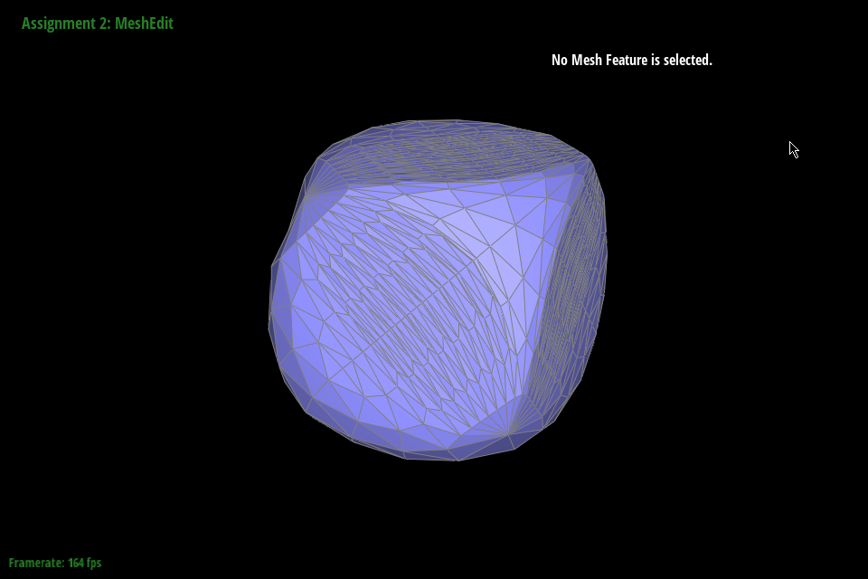

Overview
In this project, we worked on Bezier Curves as well as the Half-Edge Data Structure and how they are used in Meshes. We implemented the fundamentals of both and were able to visualize how they worked in the GUI. The things we found the most interesting about Bezier curves was that we saw they were used to implement sliders in the game Osu!. These sliders take numerous different shapes and it was cool to look back and see the different anchors used to create these shapes. For the Half-Edge Data structure, we thought how many pointers this structure had was the most interesting / frustrating. It allowed us to move around half-edges in cool ways but also was a headache to debug.
Section I: Bezier Curves and Surfaces
Part 1: Bezier Curves with 1D de Casteljau Subdivision
Briefly explain de Casteljau's algorithm and how you implemented it in order to evaluate Bezier curves.de Casteljau's algorithm is doing a linear interpolation between two points based on a variable t that ranges from 0 to 1. We implemented this by looping points.size() - 1 times since we use two vectors per lerp. We perform (1-t) * vector1 + (t) * vector2 and push the resulting vectors into a 2d vector list.
Take a look at the provided .bzc files and create your own Bezier curve with 6 control points of your choosing. Use this Bezier curve for your screenshots below.
We added the points (.727, .727) and (.272, .272) to curve1.bcz
Show screenshots of each step / level of the evaluation from the original control points down to the final evaluated point. Press E to step through. Toggle C to show the completed Bezier curve as well.
|

|
|
|

|
|
|
|
Show a screenshot of a slightly different Bezier curve by moving the original control points around and modifying the parameter \(t\) via mouse scrolling.
Part 2: Bezier Surfaces with Separable 1D de Casteljau
Briefly explain how de Casteljau algorithm extends to Bezier surfaces and how you implemented it in order to evaluate Bezier surfaces.de Casteljau's algorithm extends to Bezier surfaces by having a 2d array of 3-dimensional vectors. For the 2d array, we treat first deal with one of the dimensions and perform lerps until we reach a single point. Then, using the single points, we treat them as a new 3D Vector. Then, we perform lerps on the new vector until we get one point, which is the evaluated point in 3D. We implemented this in 3 functions. The first performed one lerp on a 3d vector. The second function looped and performed lerps until the 3D Vector input was reduced to one point. Finally, in the third function, we looped through all of the vectors in the 2d array, performing lerps like described before to get our point.
Show a screenshot of bez/teapot.bez (not .dae) evaluated by your implementation.
Section II: Triangle Meshes and Half-Edge Data Structure
Part 3: Area-Weighted Vertex Normals
Briefly explain how you implemented the area-weighted vertex normals.We kept track of a vector of all the weighted normals of each face. We calculated this by using the .5 * the cross product of AB x BC of triangle ABC * norm of AB x BC. We looped through each face by following the halfedge()->twin()->next(). Then, after we confirmed that we looped through all of the faces that used the given vertex, we summed all of the weighted normals together and normalized it.
Show screenshots of dae/teapot.dae (not .bez) comparing teapot shading with and without vertex normals. Use Q to toggle default flat shading and Phong shading.
|
|
|
Part 4: Edge Flip
Briefly explain how you implemented the edge flip operation and describe any interesting implementation / debugging tricks you have used.We followed the given diagram for the edge flip operation and conceptually thought of it as simply taking the edge and turning it on the side without changing the location of any other halfedge. There were initially quite a few bugs (less bugs and more incorrect implementation) which were all quite easily fixed by exhaustively listing out every mesh element, drawing out a picture, and reassigning pointers for all mesh elements. In this case, we had halfedges 0 and 3 join the left and right triangles such that triangle 1 was on top of triangle 2. We did not debug much for this.
Show screenshots of the teapot before and after some edge flips.
|
|
|
Write about your eventful debugging journey, if you have experienced one.
There wasn't much debugging to be done other than making sure there were no typos in the pointer assignments.
Part 5: Edge Split
Briefly explain how you implemented the edge split operation and describe any interesting implementation / debugging tricks you have used.We approached this in exactly the same way as edge flip where we exhaustively listed out every mesh element, drew out a before and after diagram, and proceeded to reassign pointers for all elements.
Show screenshots of a mesh before and after some edge splits.

|
|
Show screenshots of a mesh before and after a combination of both edge splits and edge flips.
The same edge splitting but flipping the surrounding edges.
Write about your eventful debugging journey, if you have experienced one.
The bugs we experienced here were actually simply due to not exhaustively listing out all halfedges. Notably, we forgot halfedges on the outside of the triangles. This was important for edge split because the twins for the outside halfedges change, unlike the edge flip implementation.
Part 6: Loop Subdivision for Mesh Upsampling
Briefly explain how you implemented the loop subdivision and describe any interesting implementation / debugging tricks you have used.
We followed the recommended steps to implement loop subdivision. We started by calculating the new positions for all old vertices. In this loop,
we set all vertices' isNew to false. If we upsample more than two times, there will be new vertices from the previous iterations, so we avoid that here.
To calculate the positions of the new vertices added in an edge split, we have to iterate through all edges and store the weighted position into the edge itself.
Like the first loop, we also set all edges' isNew to false by the same reasoning.
Now we start the edge splitting. We loop through all old edges that haven't been split already and split them. Since edgeSplit returns the new vertex,
we conveniently set that vertex's newPosition using the one stored in the edge. After all edges are split,
we flip each edge as necessary: it must be a new edge connected to an old and new vertex.
Finally, we loop through all vertices and update their position to the position stored in newPosition.
As for debugging, we didn't do anything special other than intensely staring at the code and using the debugger.
Take some notes, as well as some screenshots, of your observations on how meshes behave after loop subdivision. What happens to sharp corners and edges? Can you reduce this effect by pre-splitting some edges?
Sharp corners and edges get smoothed out significantly after a couple of passes. The object also appears to shrink. Through some trial and error, it seems sharp edges and corners are able to be retained if the edges around the sharp corner or edge of interesting are repeatedly split pre-processing. The effects are shown here.

|
Load dae/cube.dae. Perform several iterations of loop subdivision on the cube. Notice that the cube becomes slightly asymmetric after repeated subdivisions. Can you pre-process the cube with edge flips and splits so that the cube subdivides symmetrically? Document these effects and explain why they occur. Also explain how your pre-processing helps alleviate the effects.
This is due to the weighting mechanism used to position the vectors. We preprocessed the cube by splitting the diagonals such that the 8 vertices that made up the cube had the same degree. This alleviates effects because previously, the vertices that made up the cube had varying degrees and therefore different weightings. In the photos we can see extraordinary points are symmetrical and as a result the new mesh is also more symmetrical than before.
|
|
|
|

|
|